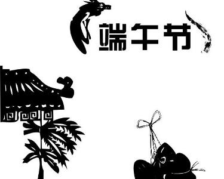

端午节简介
端午节（Dragon Boat Festival）为每年农历五月初五，又称端阳节、午日节、五月节等。“端午节”为中国国家法定节假日之一，并已被列入世界非物质文化遗产名录。端午节起源于中国，最初是中国人民祛病防疫的节日，吴越之地春秋之前有在农历五月初五以龙舟竞渡形式举行部落图腾祭祀的习俗；后因诗人屈原在这一天死去，便成了中国人民纪念屈原的传统节日；部分地区也有纪念伍子胥、曹娥等说法。
端午节（Dragon Boat Festival）为每年农历五月初五，又称端阳节、午日节、五月节等。“端午节”为中国国家法定节假日之一，并已被列入世界非物质文化遗产名录。端午节起源于中国，最初是中国人民祛病防疫的节日，吴越之地春秋之前有在农历五月初五以龙舟竞渡形式举行部落图腾祭祀的习俗；后因诗人屈原在这一天死去，便成了中国人民纪念屈原的传统节日；部分地区也有纪念伍子胥、曹娥等说法。
据《史记》“屈原贾生列传”记载，屈原，是春秋时期楚怀王的大臣。他倡导举贤授能，富国强兵，力主联齐抗秦，遭到贵族子兰等人的强烈反对，屈原遭馋去职，被赶出都城，流放到沅、湘流域。他在流放中，写下了忧国忧民的《离骚》、《天问》、《九歌》等不朽诗篇，独具风貌，影响深远（因而，端午节也称诗人节）。公元前278年，秦军攻破楚国京都。屈原眼看自己的祖国被侵略，心如刀割，但是始终不忍舍弃自己的祖国，于五月五日，在写下了绝笔作《怀沙》之后，抱石投汨罗江身死，以自己的生命谱写了一曲壮丽的爱国主义乐章。
传说屈原死后，楚国百姓哀痛异常，纷纷涌到汨罗江边去凭吊屈原。渔夫们划起船只，在江上来回打捞他的真身。有位渔夫拿出为屈原准备的饭团、鸡蛋等食物，“扑通、扑通”地丢进江里，说是让鱼龙虾蟹吃饱了，就不会去咬屈大夫的身体了。人们见后纷纷仿效。一位老医师则拿来一坛雄黄酒倒进江里，说是要药晕蛟龙水兽，以免伤害屈大夫。后来为怕饭团为蛟龙所食，人们想出用楝树叶包饭，外缠彩丝，发展成棕子。
以后，在每年的五月初五，就有了龙舟竞渡、吃粽子、喝雄黄酒的风俗；以此来纪念爱国诗人屈原。
端午节的第二个传说，在江浙一带流传很广，是纪念春秋时期（公元前770--前476年）的伍子胥。伍子胥名员，楚国人，父兄均为楚王所杀，后来子胥弃暗投明，奔向吴国，助吴伐楚，五战而入楚都郢城。当时楚平王已死，子胥掘墓鞭尸三百，以报杀父兄之仇。吴王阖庐死后，其子夫差继位，吴军士气高昂，百战百胜，越国大败，越王勾践请和，夫差许之。子胥建议，应彻底消灭越国，夫差不听，吴国大宰，受越国贿赂，谗言陷害子胥，夫差信之，赐子胥宝剑，子胥以此死。子胥本为忠良，视死如归，在死前对邻舍人说：“我死后，将我眼睛挖出悬挂在吴京之东门上，以看越国军队入城灭吴”，便自刎而死，夫差闻言大怒，令取子胥之尸体装在皮革里于五月五日投入大江，因此相传端午节亦为纪念伍子胥之日。
端午节的第三个传说，是为纪念东汉（公元23--220年）孝女曹娥救父投江。曹娥是东汉上虞人，父亲溺于江中，数日不见尸体，当时孝女曹娥年仅十四岁，昼夜沿江号哭。过了十七天，在五月五日也投江，五日后抱出父尸。就此传为神话，继而相传至县府知事，令度尚为之立碑，让他的弟子邯郸淳作诔辞颂扬。
孝女曹娥之墓，在今浙江绍兴，后传曹娥碑为晋王义所书。后人为纪念曹娥的孝节，在曹娥投江之处兴建曹娥庙，她所居住的村镇改名为曹娥镇，曹娥殉父之处定名为曹娥江。
近代大量出土文物和考古研究证实：长江中下游广大地区，在新石器时代，有一种几何印纹陶为特征的文化遗存。该遗存的族属，据专家推断是一个崇拜龙的图腾的部族----史称百越族。出土陶器上的纹饰和历史传说示明，他们有断发纹身的习俗，生活于水乡，自比是龙的子孙。其生产工具，大量的还是石器，也有铲、凿等小件的青铜器。作为生活用品的坛坛罐罐中，烧煮食物的印纹陶鼎是他们所特有的，是他们族群的标志之一。直到秦汉时代尚有百越人，端午节就是他们创立用于祭祖的节日。在数千年的历史发展中，大部分百越人已经融合到汉族中去了，其余部分则演变为南方许多少数民族，因此，端午节成了全中华民族的节日。
{kind=link}
{kind=link}
{kind=link}
{kind=link}
{kind=link}
{kind=link}